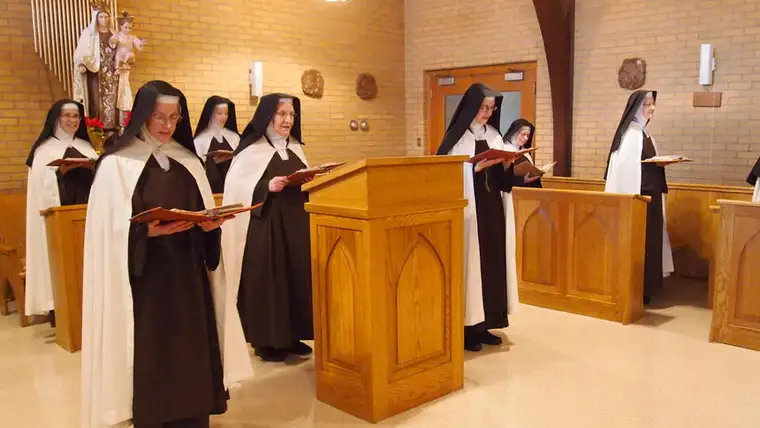

{kind=link}

Editor’s note: This is the second of a two-part series exploring the cloistered Carmelite monastery near Wahpeton, N.D. First installment: Profile of Mother Madonna, prioress of the Carmel of Mary Monastery.
WAHPETON, N.D.—It’s been called the “Ground Zero of prayer,” the “spiritual nexus of the diocese,” says the Rev. Peter Anderl.
But Anderl, who regularly hears the confessions of the eight religious sisters who inhabit the cloister at the Carmel of Mary Monastery here, has another designation for the nuns themselves.
“If you think about people as cars, (the sisters) are like Maseratis,” he says. “When they’re running well, look out world, because they’re going 180 miles an hour versus 30 on the gravel road.”
For example, the area hasn’t had a bad farming year in eight decades, according to Anderl, which he attributes in part to the prayers that pour out from the hearts of the women within the cloistered walls.
“Very few people are aware of the graces that flow from the hallowed halls of this place,” he says. “I honestly have never had a prayer request go unanswered here, and usually, very quickly. They’re amazing.”
In exchange for the tremendous graces the sisters receive from God, he says, “all they ever want to do is be a conduit to pass those graces on to others.”
Carmel of Mary is one of four monasteries in the United States that follows the primitive observance of the ancient order of Carmelites. They consider Elijah, the prophet, their father, and Mary, mother of Jesus, a guiding light that leads them to her son.
Their life of prayer and vows of obedience, poverty and chastity perplex some on the outside, Anderl says. “That’s because this calling is not natural, it’s supernatural. It’s a calling and gift from God to serve him with an undivided heart.”
The local order marks one of the few that will sacrifice sleep to pray for the needs of the world, beginning at midnight, he says. “They pray against the sins of darkness committed at night; that’s powerful.”
Mass each morning, presided over most often by the Rev. Jim Tiu, forms the heart of their worship, which continues throughout the day with only brief periods of rest, including one hour of evening recreation involving minimal conversation.
Seven times throughout the day, the nuns pray in Gregorian chant in common prayers known as the Liturgy of the Hours.
“They are prayer warriors, and that’s their life,” says Karen Weber, who has lived on the grounds with her husband, Hank, for the past 18 years as caretakers. One of Hank’s siblings, Sister Elizabeth, resides within the monastery. “They interrupt their prayer to work where the rest of us stop our work to pray.”
The Webers have raised five children on these quiet grounds and consider themselves “spoiled,” and monastery life their “own little part of paradise on earth.”
Their children grew up with the sounds of bells summoning them to Mass every morning, and worshiping in the public wing of the chapel. The sisters’ wing, portioned off by a screen, keeps them “hidden,” as their life dictates.
Though Hank sees the sisters quite often as their repairman, their discussions are limited to “just necessary talk” about what needs to be done.
Mother Madonna, prioress, says the silence allows the sisters to conserve their energy to “commune with our Lord.” “When you’re talking and talking, it’s taking energy from your body, so we have to be resourceful in that way, too.”
When the sisters need to see the doctor or dentist, the Webers often drive them to town. “You’d think it would be chit-chat time, but no, it’s prayer time,” Karen says, noting that while a whole Rosary can’t be recited during the brief, 6-mile trip, they can usually sneak in a Divine Mercy chaplet, another Catholic prayer said with beads.
The sisters are so communal-minded, the Webers note, that when they do talk about themselves, it is in the context of “our” or “ours,” not “me” or “mine.”
And yet, each sister is unique, Anderl contends. “They’re kind of like a rainbow. They all have their own frequency of grace, purpose and charism, and when you put them all together, you have this incredible package.”
The monastery was instituted in 1954 by Leo F. Dworschak, Diocese of Fargo bishop, who, Anderl says, wanted “a contemplative, cloistered order to provide for the (spiritual) needs of the faithful in Eastern North Dakota.”
The community is autonomous, though in good relationship with the local diocese.
Sister Margaret Mary, the oldest current sister at 78, originally from New England, N.D., was drawn to Carmel in 1955, only a year after it was founded here as an offshoot of another ancient-order monastery in Allentown, Pa.
An organist and vocalist, she says the Carmelites interested her because of their love of music.
Over the years, she’s seen the monastery swell to 22 sisters at its largest.
Sister Margaret Mary says their busy prayer life, along with duties inherent in maintaining their lives, doesn’t allow time to watch television, but they do check news reports. “We don’t have to know everything going on in the world, but we do have to know what to pray for.”
Kyle McGuire, Fargo, first encountered the sisters in summer 2012 during the annual pilgrimage at the monastery on the Marian feast day of The Assumption.
He’d recently undergone a dramatic conversion, fleeing from years of anger and addiction to return to the Catholic faith of his roots. “There was something with their Marian devotion. Mary spoke to me moreso than anything. She was obviously leading me to her son, Jesus,” he says.
While McGuire knew God existed prior to that, he says for years he decided to “roll with sin and darkness because that lifestyle was easy, and more convenient.”
But it also nearly ruined his soul, he says, and his return to God and discovering Carmel, where he attends Mass on Sundays as often as he can, has changed him from the inside-out.
“When I first visited, a peace came over me that I’ve never felt before in my life, just in walking around the grounds,” he says. Though the sisters’ chants were foreign to his ears, he recalls thinking, “I don’t even know what they’re saying, but it’s beautiful.”
When he visits, he brings flowers for the sisters, and offers manual labor when needed in exchange for their prayers. “I spoil them as much as I can. But with gifts, they won’t receive elaborate gifts; that’s not their deal.”
Their vow to live in poverty comes from the Mendicant mentality, Karen explains, which means “beggar.” “It’s God’s providence,” she adds, noting that donations from the outside world sustain the sisters, while their prayers are compensation.
Vicky Westra, a Lutheran Christian from Moorhead, has been at the monastery as a guest several times, and says that when she is there, she doesn’t have to go looking for God since she can “feel him everywhere.”
At the cloister, her mind becomes “fully present and engaged, free of the distractions of daily life,” leaving her heart “open and unhindered.”
Westra adds, “My burdens empty so I can fill once again, with peace, joy and love.”
If you go
What: 59th annual Pilgrimage to the Shrine of Our Lady of the Prairies
When: 3 p.m. Aug. 16 rosary and confessions, 5 p.m. Mass, 6 p.m. picnic
Where: Carmel of Mary Monastery, 17765 78th St. SE, Wahpeton, N.D.
Online: Prayer requests for the Carmelite sisters can be submitted to their website, carmelofmary.org.
[For the sake of having a repository for my newspaper columns and articles, I reprint them here, with permission, a week after their run date. The above piece ran in The Forum newspaper on August 1, 2015.]